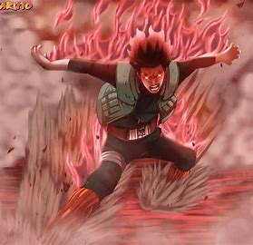
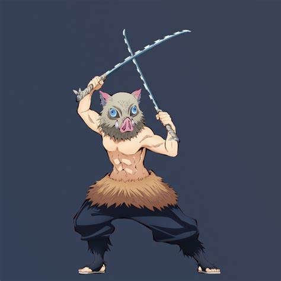
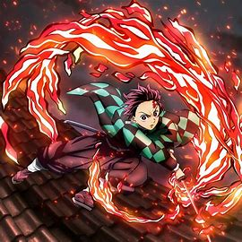
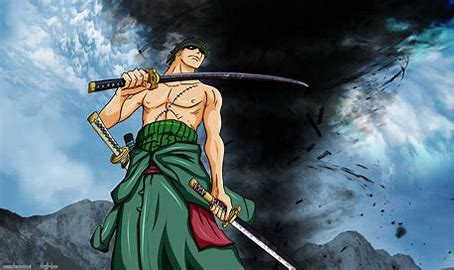
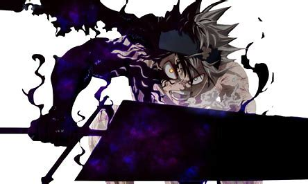
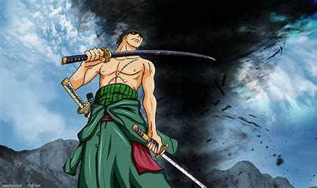
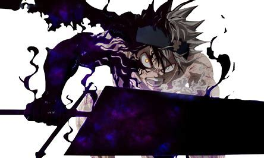
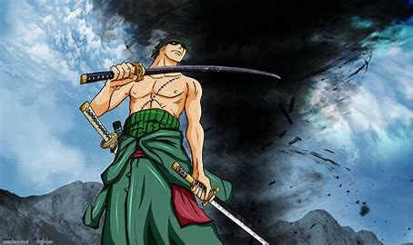
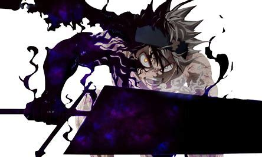

ABOUT ME
Hi everyone ! Let's me introduce my self ! My name is Samuel HOUNGBO i'm web-designer and software developer ! I'm a 18 years old and i'm 5'2. I'm a big manga lover and later i wantto work on a studio animation like 'Crunchyroll', 'MAPPA' or 'FUNIMATION'. In this site i want to introduce you some of my favs manga charachters. Ready ? Let's GOOO !!
My Favs Charachters



 





Contact Me
If you want to contact me, just put your mail comment and phone number i'll answer